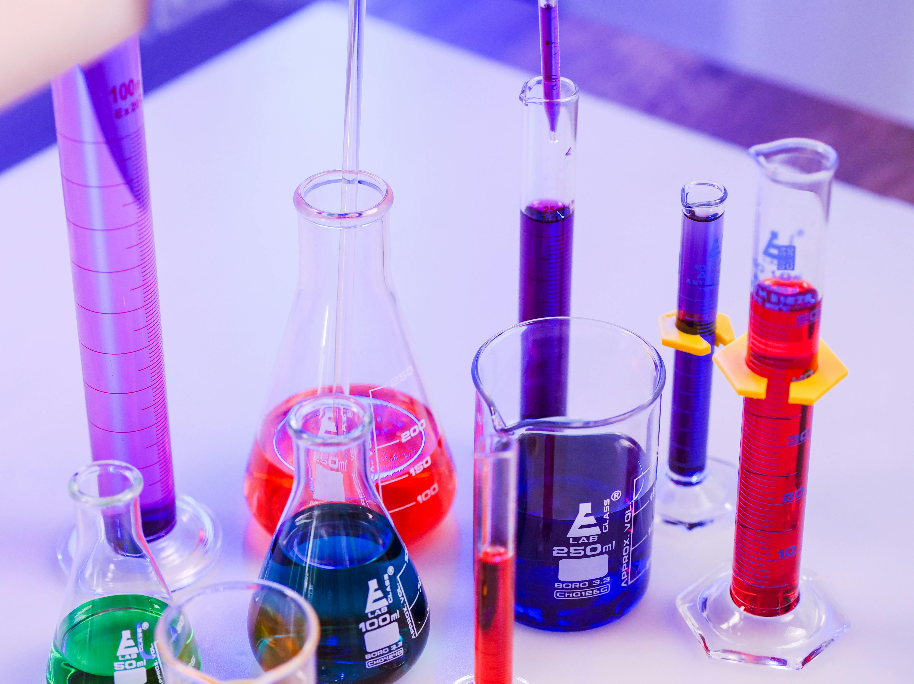

Explorando los cambios físicos y químicos en la materia.
La materia puede experimentar dos tipos de cambios: físicos y químicos. Los cambios físicos son aquellos en los que la sustancia no cambia su composición química, sino solo su forma o estado. Los cambios químicos, por otro lado, involucran la formación de nuevas sustancias con propiedades diferentes a las originales.
Estos cambios ocurren en una amplia variedad de situaciones en nuestra vida diaria. Por ejemplo, al calentar agua, el cambio en el estado de la materia de líquido a vapor es un cambio físico, mientras que al mezclar ciertos productos como el vinagre y el bicarbonato, se genera una nueva sustancia: dióxido de carbono, lo cual es un cambio químico.
Este experimento demostrará ambos tipos de cambios utilizando el agua, el hielo, el vinagre y el bicarbonato de sodio como ejemplos claros de cada tipo de cambio.
El objetivo de este experimento es observar y comparar los cambios físicos y químicos en los materiales utilizados. Se busca entender cómo las condiciones externas, como la temperatura o las reacciones químicas, pueden transformar la materia.
El experimento utiliza sustancias comunes para ilustrar la diferencia entre estos dos tipos de cambios. A través de la observación directa, se pretende ayudar a los estudiantes y experimentadores a comprender cómo ocurren estos procesos en la vida cotidiana.
Los resultados mostraron lo siguiente:
| Condición | Temperatura Inicial | Temperatura Final |
|---|---|---|
| Agua con hielo | 0°C | 4°C |
| Vinagre + Bicarbonato | 22°C | 25°C |
El derretimiento del hielo es un cambio físico porque la sustancia (agua) sigue siendo la misma, solo cambia su estado de sólido a líquido. Este cambio es reversible. Si enfriamos el agua líquida nuevamente, el agua se congelaría y volvería a convertirse en hielo.
Por otro lado, la mezcla de vinagre y bicarbonato muestra un cambio químico, ya que los reactivos se transforman en nuevas sustancias, como el dióxido de carbono. Este tipo de cambios no es reversible. Una vez que se ha producido el gas, no podemos revertir el proceso a las sustancias originales.
La observación de la temperatura también es importante: cuando el hielo se derrite, la temperatura del agua aumenta ligeramente, mientras que en la reacción química entre vinagre y bicarbonato, se observa una ligera subida de temperatura debido a la liberación de energía durante la reacción.
Este experimento nos permitió observar y diferenciar claramente los cambios físicos y químicos. Aprendimos que los cambios físicos son reversibles y no afectan la composición química de las sustancias, mientras que los cambios químicos resultan en la formación de nuevas sustancias y son irreversibles.
En resumen, la materia puede experimentar transformaciones notables tanto a nivel de su forma (cambio físico) como de su composición química (cambio químico), y ambos son procesos fundamentales para entender cómo funciona el mundo a nuestro alrededor.